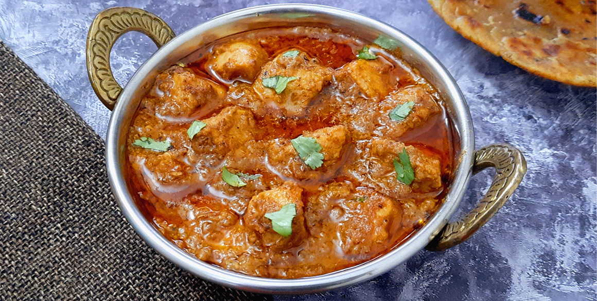
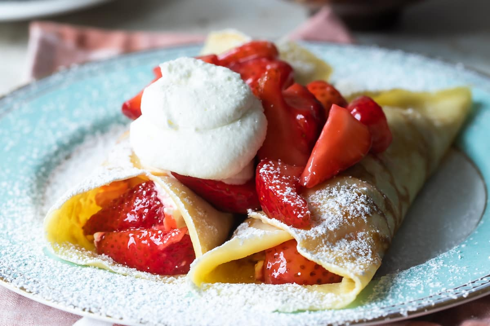
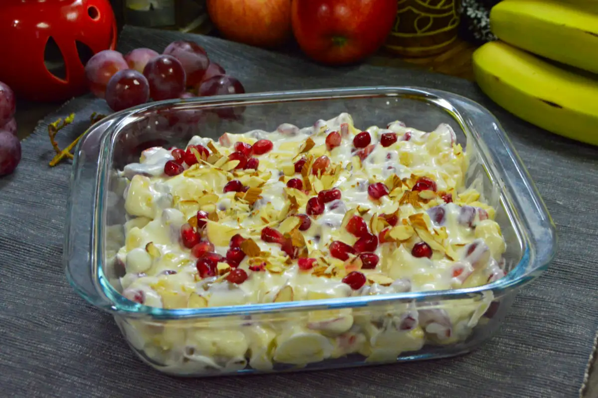

Chicken Korma
Next, prepare the onion paste. Heat oil or ghee in a deep pan over medium heat and add the thinly sliced onions. Fry until they turn golden brown, stirring frequently to avoid burning. Once browned, remove the onions from the oil and let them cool before grinding into a smooth paste, adding a little water if necessary. Set the onion paste aside.
Simultaneously, prepare the nut paste by draining the soaked cashews or almonds and poppy seeds, then grinding them together into a creamy consistency, adding water as needed. Set this paste aside.
For cooking the chicken, use the same pan with the remaining oil. Add green cardamom pods, cloves, a cinnamon stick, and bay leaves, sautéing for a minute until fragrant. Introduce the marinated chicken to the pan, cooking on medium-high heat until it starts to brown, stirring occasionally. Add the prepared onion paste and mix well, cooking for another 5-7 minutes until the oil begins to separate from the mixture.
Incorporate the coriander powder, cumin powder, black pepper powder, and nutmeg powder, mixing thoroughly. Then, add the cashew or almond-poppy seed paste, combining it well with the chicken and spices. Stir in fresh cream or coconut milk, followed by water or chicken stock to achieve the desired consistency. Season with salt to taste, cover the pan, and let the korma simmer on low heat for 15-20 minutes until the chicken is fully cooked and tender, stirring occasionally to prevent sticking and ensure even cooking.
For the final touches, add garam masala and slit green chilies, mixing gently. Cook for another 2-3 minutes before turning off the heat. Garnish with fresh coriander leaves. Serve the Chicken Korma hot with naan, roti, or steamed basmati rice, accompanied by a side of raita or a fresh salad. Adjust the consistency of the gravy to your preference and consider adding a splash of rose water or kewra water towards the end for a royal touch. Enjoy your flavorful and aromatic Chicken Korma!
Strawberry Crepe
While the batter rests, prepare the strawberry filling. In a medium bowl, combine 2 cups of hulled and sliced fresh strawberries with 2 tablespoons of granulated sugar and 1 tablespoon of lemon juice. Toss to coat the strawberries evenly and let them sit for about 15-20 minutes to macerate and release their juices.
Next, make the whipped cream. In a large bowl, beat 1 cup of heavy cream with an electric mixer on medium-high speed until it begins to thicken. Add 2 tablespoons of powdered sugar and 1 teaspoon of vanilla extract, continuing to beat until soft peaks form. Be careful not to overbeat. Set the whipped cream aside.
To cook the crepes, heat a lightly oiled non-stick skillet or crepe pan over medium-high heat. Pour about 1/4 cup of the batter into the center of the pan and immediately swirl it to spread the batter evenly over the surface. Cook for about 1-2 minutes, until the edges start to lift and the bottom is golden brown. Carefully flip the crepe with a spatula and cook the other side for another 1-2 minutes. Remove the crepe from the pan and place it on a plate. Repeat with the remaining batter, stacking the cooked crepes on a plate and covering them with a clean kitchen towel to keep warm.
To assemble the crepes, take one crepe and spread a layer of the strawberry filling over half of it. Fold the crepe in half, then fold it again into quarters. Alternatively, you can roll the crepe around the filling. Repeat with the remaining crepes and filling.
Serve the crepes warm, topped with a dollop of whipped cream and additional sliced strawberries if desired. You can also drizzle some of the strawberry juice from the filling over the top for extra flavor. Enjoy your delicious homemade strawberry crepes!
Macaroni And Cheese

In a large saucepan, melt the butter over medium heat. Add the flour and whisk continuously for about 2 minutes to form a roux. The mixture should be smooth and free of lumps.
Gradually add the milk to the roux, whisking constantly. Continue to cook and stir until the mixture thickens and starts to bubble. This should take about 5 minutes.
Reduce the heat to low and gradually add the shredded cheddar cheese, stirring until the cheese is completely melted and the sauce is smooth. Add the salt, black pepper, and paprika (if using). Stir to combine.
Add the cooked macaroni to the cheese sauce and stir until the pasta is evenly coated. If you want to add Parmesan cheese, mix it in at this stage.
For a baked version, preheat your oven to 350°F (175°C). Transfer the macaroni and cheese to a greased baking dish. If desired, sprinkle breadcrumbs evenly over the top. Bake for 20-25 minutes, or until the top is golden brown and bubbly.
Serve the macaroni and cheese hot, either directly from the stovetop or after baking. Enjoy your creamy and delicious homemade macaroni and cheese!
Pancakes

Once the batter is ready, heat a non-stick skillet or griddle over medium heat. Allow it to heat up for a few minutes. Add a small amount of butter or oil to the skillet, spreading it evenly across the surface. Pour about 1/4 cup of batter onto the skillet for each pancake. Use the back of a spoon or ladle to spread the batter into a round shape if needed. Cook the pancakes for 2-3 minutes, or until bubbles form on the surface and the edges start to look set.
Carefully flip the pancakes using a spatula and cook for an additional 1-2 minutes, or until golden brown on the bottom and cooked through. Transfer the cooked pancakes to a plate and keep them warm. Repeat the cooking process with the remaining batter, adding more butter or oil to the skillet as needed.
Serve the pancakes warm with your favorite toppings. Whether you prefer classic maple syrup, fresh berries, sliced bananas, chocolate chips, or whipped cream, pancakes offer endless opportunities for delicious customization. Enjoy your fluffy and delightful homemade pancakes for breakfast or as a tasty snack any time of day!
Experiment with different toppings and flavors to cater to your preferences. Pancakes are versatile and adaptable, making them a beloved treat for all occasions.
Curd And Fruits Salad
Wash all the fruits thoroughly under cold water, then peel, slice, and dice them as desired, making sure to remove any seeds or pits. In a large mixing bowl, combine the prepared fruits, gently tossing them together until they are evenly distributed. Next, spoon generous dollops of creamy yogurt or curd over the mixed fruits.
Carefully fold the curd into the fruits until they are well coated, ensuring that each fruit is evenly covered. For added sweetness and texture, consider sprinkling a tablespoon of honey or maple syrup over the salad, or add a handful of chopped nuts or granola for some crunchiness.
If time allows, refrigerate the salad for about 30 minutes to allow the flavors to meld together and the salad to chill. Once chilled, transfer the salad to serving bowls or plates, and garnish with a few mint leaves or a sprinkle of cinnamon powder for an extra burst of flavor, if desired.
Serve the curd and fruit salad immediately as a refreshing and nutritious snack or dessert option. This delightful dish is not only delicious but also packed with vitamins, minerals, and antioxidants, making it a perfect way to enjoy the goodness of fresh fruits with a creamy twist. Feel free to customize the salad with your favorite fruits and toppings to suit your taste preferences.
Fried Potato Balls
Next, create a coating station with three shallow bowls: one with flour, another with beaten eggs, and the last one with breadcrumbs. Roll each potato ball in flour, ensuring an even coating, then dip it into the beaten eggs, allowing any excess to drip off. Finally, coat the potato ball thoroughly with breadcrumbs, pressing gently to ensure they adhere properly. As each potato ball is coated, set them aside on a plate.
Heat oil in a deep fryer or a heavy-bottomed skillet over medium heat. Once the oil reaches 350°F (175°C), carefully add a few potato balls at a time, ensuring they have enough space to fry evenly. Fry the potato balls until they turn a beautiful golden brown, usually taking around 3-4 minutes. Keep an eye on them to prevent overcooking. Once fried to perfection, use a slotted spoon to transfer them to a plate lined with paper towels to absorb any excess oil. Repeat the frying process with the remaining potato balls.
Finally, serve the Fried Potato Balls piping hot with your favorite dipping sauce or enjoy them on their own as a delightful appetizer or side dish. Each bite offers a crunchy exterior giving way to a creamy, well-seasoned potato interior, making them irresistible to anyone who tries them.
Egg Curry
Once the onions are beautifully caramelized, it's time to layer in the aromatics. Add minced garlic and ginger to the pan, stirring constantly until they become fragrant and permeate the air with their enticing scent. Now, introduce diced tomatoes to the mix, allowing their natural juices to mingle with the other ingredients. To elevate the flavor profile of the curry, sprinkle in a medley of spices such as ground turmeric, cumin, coriander, and garam masala, each contributing its unique essence to the dish.
As the spices toast and release their oils, they infuse the curry with warmth and depth, creating a tantalizing aroma that fills the kitchen. At this point, adjust the heat as needed to prevent the spices from burning, ensuring they impart their full flavor without becoming bitter. Once the tomatoes have softened and the mixture has thickened slightly, it's time to add the liquid component to the curry.
Depending on your preference and dietary restrictions, you can choose between coconut milk or water to form the base of the curry sauce. Coconut milk lends a creamy richness to the dish, while water offers a lighter alternative that allows the flavors of the spices to shine through. Carefully pour the chosen liquid into the pan, stirring gently to combine all the ingredients into a cohesive sauce.
Now, it's time to introduce the star of the show: the hard-boiled eggs. Nestle the eggs gently into the curry sauce, ensuring they are submerged and coated with the flavorful mixture. Lower the heat and let the curry simmer gently, allowing the eggs to soak up the aromatic flavors of the sauce while imparting their creamy texture to the dish.
As the curry simmers, take a moment to season it with salt and pepper to taste, adjusting the flavors according to your preference. Finally, just before serving, sprinkle the curry with freshly chopped cilantro or parsley, adding a burst of freshness and color to the dish. Serve your aromatic egg curry hot, accompanied by fluffy basmati rice or warm naan bread, and savor each spoonful of this comforting and satisfying meal. Allow the flavors to dance on your palate as you indulge in the rich and aromatic goodness of this homemade delicacy. With its perfect balance of spices and textures, this egg curry is sure to become a favorite in your culinary repertoire, delighting family and friends alike with its irresistible charm and flavor.